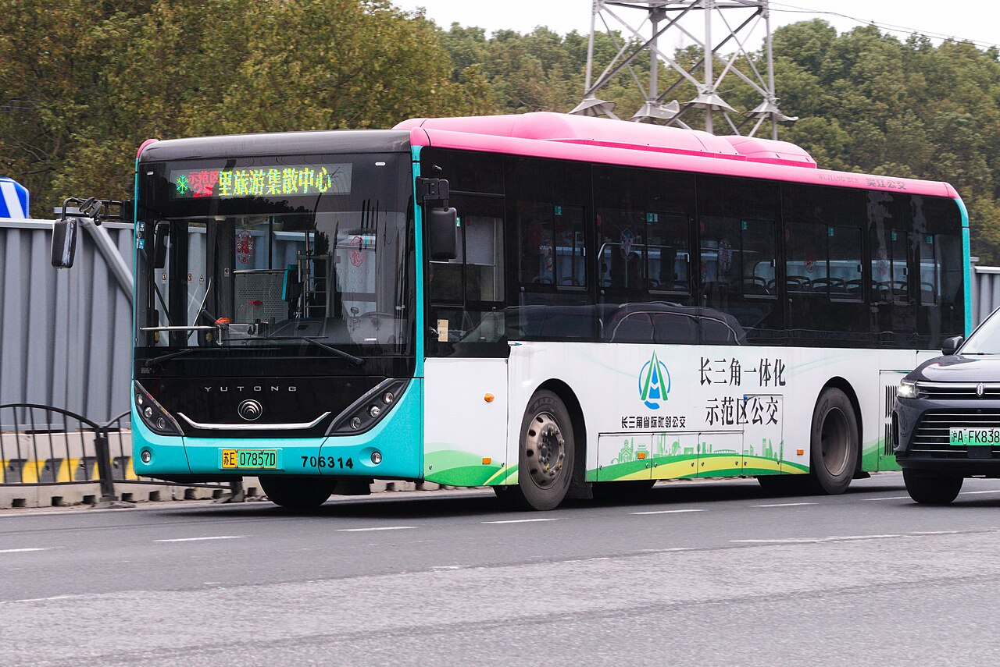

🏞️ 黎里古镇（苏州吴江）
方案③小众古镇 · 避人流
免费小众安静距亚朵25km

实景照片 · 来源 Wikimedia Commons（CC协议）
← 返回主计划
位置与交通
- 位置：苏州市吴江区黎里镇
- 距苏州湾亚朵：约 25km / 30分钟
价格参考
| 项目 | 价格 | 说明 |
|---|
| 入镇 | 免费 | 开放街区 |
| 摇橹船 | 约100–150元 | 按船计价 |
特点与适合谁
- 比周庄/同里安静小众，出片、不挤。
- 爸爸逛古镇、女童坐船皆宜。
- 可作为同里的人流替代选项。
注意事项
距酒店稍远（30min），适合安排在非高峰日（如10/2）慢逛半天。